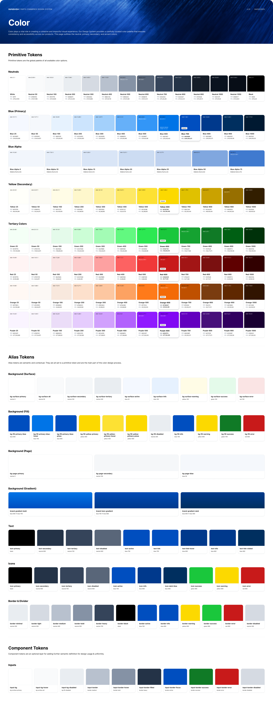

Wabash

Wabash is a leading innovator in transportation and logistics, engineering advanced solutions that move industries forward—from trailers and truck bodies to cutting-edge composite technologies. As the sole UI/UX Designer for Wabash Parts Commerce, I designed the company's next-generation B2B eCommerce platform, enabling distributors to seamlessly source and purchase parts directly from Wabash and its nationwide dropship partners.
With tens of thousands of parts, the platform required thoughtful design around searchability and discoverability. It also needed to support complex B2B and B2B2B workflows—from ERP-style fulfillment queues to features like letting customers build and send quotes to their own buyers.